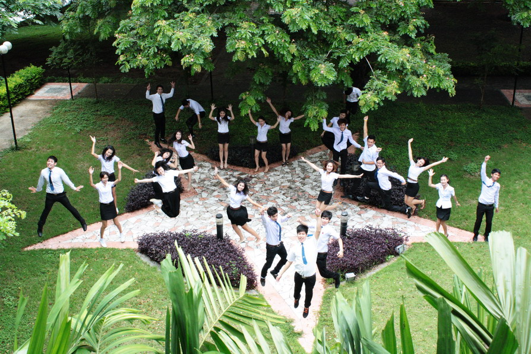
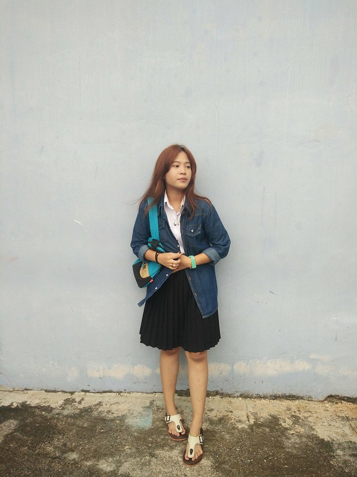

Our Diary

Sarocha Diary.
No one can go back in time to change what has happened, so work on your present to make yourself a wonderful future

Thanyathon Diary.
Friendship isn't about whom you have known the longest. It's about who came and never left your side.

Winidchai Diary.
You are never too old to set another goal or to dream a new dream.
Sarocha Diary.
สวัสดีค่ะหนูชื่อนางสาวสโรชา ศรีประยูร อายุ 21 ปี เป็นนักศึกษามหาวิทยาลัยสงขลานครินทร์ วิทยาเขตหาดใหญ่ กำลังศึกษาอยู่ชั้นปีที่ 2 คณะวิทยาการจัดการ สาขาระบบสารสนเทศค่ะ
Skills
Education
Experience
Activity
ตั้งแต่ได้ก้าวเท้าเข้ามาในรั้วมหาลัย ในความคิดของหนู หนูคิดว่ามันคงจะมีแต่ความรัก ความสนุก เฮฮา แต่ในความจริงชีวิตในมหาลัยไม่ได้เป็นอย่างที่คิด ไม่ได้สวยงามเลย การเข้ามาอยู่ในมหาลัยเหมือนได้ฝึกประสบการณ์ ได้เรียนรู้ในการเติบโตเป็นผู้ใหญ่มากขึ้น ไม่ว่าจะเป็นเรื่อง การคบเพื่อน การเข้าสังคม การเรียน สิ่งเหล่านี้ถ้าหากเราผ่านพ้นมันมาได้ก็จะทำให้เราได้เรียนรู้การเติบโตเป็นผู้ใหญ่มากขึ้น วันแรกที่เข้ามาในรั้วมหาลัยเป็นอะไรที่ตื่นเต้นมาก ได้แต่คิดว่าเราจะพบเพื่อนมากน้อยแค่ไหน นิสัยจะดีหรือไม่ดี แต่แล้วสิ่งที่ไม่อยากเจอก็ต้องเจอ นั้นคือ อุปสรรคในการคบเพื่อน ซึ่งการคบเพื่อนครั้งแรกของการเข้าในมหาลัยนั้น ก็ไม่ได้คิดอะไรมากมาย เพราะคิดว่าเพื่อนที่เราคบ เราเชื่อใจเขา เรารักเขา สนิทกันก่อนเข้ามหาลัย และได้มาเรียนอยู่คณะเดียวกัน สาขาเดียวกันคงช่วยเหลือดูแลกันตลอด แต่สุดท้ายเรื่องไม่เคยคิดว่าจะเกิดขึ้นก็เกิด เมื่อถึงช่วงที่แตกหักกัน ขีวิตก็รู้สึกเคว้งคว้าง โดดเดี่ยวบ้างในบางครั้ง จนมีเพื่อนคนนึงที่ดึงเราออกมาจากความอ้างว้างนั้น ทำให้เรากลับมาสดใสได้อีกครั้ง มีสังคมใหม่ที่ดี ประสบการณ์เหล่านี้เป็นแค่บางส่วนในชีวิตมหาลัย ยังมีอีกหลายๆอย่างที่เราต้องพบเจอ และพร้อมจะฟันฝ่าอุปสรรคเหล่านั้นไป
Thanyathon Diary.
สวัสดีค่ะหนูชื่อนางสาวธันยธรณ์ แซ่ลิ่ม อายุ 21 ปี เป็นนักศึกษามหาวิทยาลัยสงขลานครินทร์ วิทยาเขตหาดใหญ่ กำลังศึกษาอยู่ชั้นปีที่ 2 คณะวิทยาการจัดการ สาขาระบบสารสนเทศค่ะ
Skills
Education
Experience
Activity
วันแรกที่ได้ก้าวเข้ามาในรั้วมหาวิทยาลัยนี้ ความรู้สึกตอนนั้นคือ อยากจะกลับบ้านมากๆเลยไม่อยากอยู่แล้วที่นี่ เวลานอนตอนกลางคืนก็นอนไม่หลับ นั่งร้องไห้คิดถึงพ่อ คิดถึงแม่คิดถึงบ้าน เพราะว่าเรากลับบ้านไม่ได้เราพักอยู่ที่หอพักของมหาวิทยาลัย เวลาโทรกลับไปที่บ้านก็จะร้องไห้ตลอดเลยเพราะเราเป็นคนที่ไม่เคยจากครอบครัวไปอยู่ที่ไหนเลย วันแรกที่ได้ไปเรียนยิ่งรู้สึกว่ายิ่งอยากกลับบ้านมากกว่าเดิมอีก ที่นี่วุ่นวายมากเลย เราไม่ชอบอยู่ที่ ที่มันวุ่นวายมีรถวิ่งมากมาย แถมยังไม่ค่อยมีน้ำใจอีก เราได้รู้จักกับเพื่อนใหม่แต่เราก็ไม่ได้สนิทกับพวกเขาสักเท่าไหร่หรอกเพราะว่าพวกเราพึ่งจะได้รู้จักกัน แต่พวกเขาก็ดูมีความสุขกับที่นี่มากกว่าเรา เราได้เจอกับพวกรุ่นพี่พวกเขาก็น่ารักดีนะ แต่บางทีเราก็ไม่ค่อยจะชอบพวกเขาสักเท่าไหร่ โดยเฉพาะการเข้ารับน้องแรกๆเราก็ไม่เข้าใจเหมือนกันว่าทำไมพวกพี่เค้าจะต้องพูดเสียงดังๆกับพวกเราด้วย อันที่จริงแล้วพูดกันดีๆก็ได้ เพราะเวลาที่ไม่ได้อยู่ในการับน้องพวกพี่ๆเขาก็ดูน่ารักดีก็พูดกับพวกเราดีๆได้ แต่ถ้ามองในอีกแง่ก็ตลกดีเหมือนกันนะที่เห็นพวกเค้าเล่นละครกับเรา แต่บางคนก็เล่นเก่งมากๆเลย ทำให้เราถึงกับร้องไห้ได้เลยทีเดียว แลทำให้เราเกลียดได้ด้วยเช่นกัน แต่เมื่อเวลาผ่านไปมันก็สนุกดี แล้วเราก็เข้าใจพวกพี่เขา ส่วนกับเพื่อนๆนั้นก็ดีนะ แต่เราก็ชอบที่จะอยู่คนเดียวซะมากกว่า เบางทีคนที่เราเจอนั้นเวลาคุยกันมันรู้สึกเหมือนว่าเป็นการเสแสร้งแกล้งทำกันซะมากกว่า เราเลยไม่ชอบ แต่ว่าคนที่จริงใจก็มีนะเค้าก็น่ารักดูตลกดี การใช้ชีวิตในรั้วมหาวิทยาลัยนี้เราจะต้องมีความอดทนใหมากๆเลยที่เดียว ยิ่งคนที่อยู่ไกลบ้าน ไกลพ่อไกลแม่และครอบครัวจะต้องดูแลตัวเองให้มากๆ และต้องมีความรับผิดชอบให้มากด้วยเช่นกัน ระต้องระวังตัวเองจากอันตรายรอบด้านกับการที่เราได้มาอย฿ไกลบ้าน อย่าไว้ใจใครมาก เพราะคนที่อยู่ที่นี่เราไม่สามารถที่จะยั่งรู้ถึงจิตใจของพวกเขาได้ ทุกวันนี้ที่เราได้ใช้ชีวิตอยู่ในรั้วมหาวิทยาลัยนี้ก็นานแล้วเหมือนกันนะแต่เราก็ยังรู้สึกว่าเราไม่ค่อยจะแฮปปี้กับที่นี่สักเท่าไหร่นะ คงเป็นเพราะว่าเราปรับตัวให้เข้ากับที่นี่ไม่ได้สักทีมั้ง แต่ก็เริ่มรู้จักปรับตัวให้เข้ากลับที่นี้ เปลี่ยนแปลงพฤติกรรมของตัวเองให้ดีขึ้นพัฒนาตัวเองให้ดี เป็นผู้ใหญ่มากขึ้น มีความรับผิดชอบ ตรงต่อเวลา สิ่งนี้จะทำให้ก้าวผ่านเพื่อให้เรียนจบมีงานทำเพื่อให้พ่อแม่ภาคภูมิใจ
Winidchai Diary.
สวัสดีครับผมชื่อนายวินิจฉัย สาแก้ว อายุ 21 ปี เป็นนักศึกษามหาวิทยาลัยสงขลานครินทร์ วิทยาเขตหาดใหญ่ กำลังศึกษาอยู่ชั้นปีที่ 2 คณะวิทยาการจัดการ สาขาระบบสารสนเทศครับ
Skills
Education
Experience
Activity
ผ่านมาเกือบจะ 3 ปีแล้ว ผมรู้สึกว่าที่นี่ดูอบอุ่นมาก สิ่งที่ผมได้เห็นจากการมาครั้งแรก คือการสอบสัมภาษณ์ซึ่งเป็นเหมือนด่านทดสอบของการจะเป็นนิสิตที่นี่ แต่ผมกลับมีปัญหาในเรื่องเอกสารที่่ผิดพลาด แต่ดีที่มีรุ่นพี่และอาจารย์ที่สาขาช่วยเหลืออย่างเต็มที่หนูรู้สึกประทับใจมาก วันแรกที่เปิดเทอมผมไม่รู้ว่าคณะอื่นรับน้องกันแบบไหน แต่คณะวิทยาการจัดการ รับน้องกันในค่ายสานใจ มีกิจกรรมมากมายให้ร่วมสนุกด้วยกันกับเพื่อนๆและรุ่นพี่ ซึ่งนอกจากจะทำให้รู้จักมหาวิทยาลัยมากขึ้นแล้ว ที่สำคัญยังทำให้ผมได้พบเพื่อนใหม่ที่มาจากคนละที่ คนละภาคกันทำให้ได้เรียนรู้ความต่างของแต่ละที่ เรียนรู้ความต่างซึ่งกันและกันมากขึ้นอย่างสนุกสนาน นอกจากนั้นการใช้ชีวิตในหอพักก็เป็นสิ่งที่ผมประทับใจมาก เพื่อนๆที่ห้อง ก็พักกันอยู่ใกล้ๆกัน เราจึงใช้เวลาปรับตัวไม่นานก็สนิทกันเร็ว การอยู่หอพักนอกไม่ใช่เป็นสิ่งที่น่ากลัวแต่เป็นความสนุกที่เราไม่เคยพบต่างหาก แล้วอาจารย์สั่งงานอะไรเพื่อนๆในห้องก็จะช่วยเหลือกันเต็มที่ แม่บ้านที่สาขามีอะไรแม่บ้านก็จะช่วยเหลือค่อยให้คำแนะนำมาโดยตลอด ยิ้มให้กับนักศึกษาตลอดเวลาพูดคุยสนุก จึงทำให้นักศึกษาปลื้มแกมาก เมื่อเข้าช่วงสอบมันทำให้เราได้ช่วยเหลือกันมากขึ้น ช่วยกันติวในเรื่องที่แต่ละคนถนัดทำให้สนิทกับเพื่อนๆได้มากขึ้น เวลาทางมหาวิทยาลัยจัดกิจกรรมอะไรมันทำให้นักศึกษาสนุกมาก พอมีงานอะไรพวกนักศึกษาก็ช่วยกันเต็มที่ จึงทำให้ผมรู้จักเพื่อนมากมาย เพื่อนที่ต่างคณะกันและเพื่อนต่างสาขากันรวมไปถึงรุ่นพี่ ช่วงเวลาในมหาวิทยาลัยจึงสนุกมาก แต่ก็เหนื่อยมากกับการเรียนเพราะแต่ละงานมันเป็นอะไรที่ยากสุดๆ แต่ผมก็รู้สึกว่าตัวเองโชคดีมากที่ได้มาเรียนที่นี่ ได้เรียนรู้ชีวิตนอกบ้านที่ต่างจังหวัด และได้มีโอกาสเป็นนักศึกษาของอาจารย์ที่ดีหลายๆท่าน และก็รู้สึกประทับใจมากที่ได้มาเรียนรู้ได้เจอสิ่งใหม่ๆ ที่ไม่เคยเจอมาก่อน ซึ่งนับว่าเป็นประสบการณ์ที่ดีที่สอนอะไรหลายๆอย่างเลยครับ
Contact
Sarocha.
Phone: 080 548 0874
Instagram: Sarochr
Facebook: Sarocha Sriprayoon
Thanyathon.
Phone: 098 736 9269
Instagram: Beau.tnyz
Facebook: Beau'u Thanyathon
Winidchai.
Phone: 097 358 0939
Instagram: Winsakaew
Facebook: Winidchai Sakaew
Lets get in touch.Send me a message: